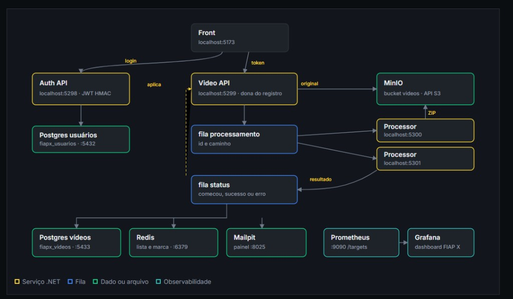
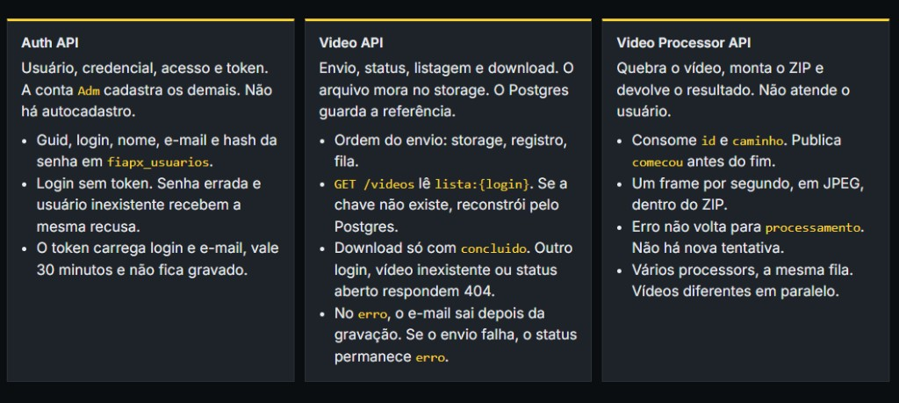
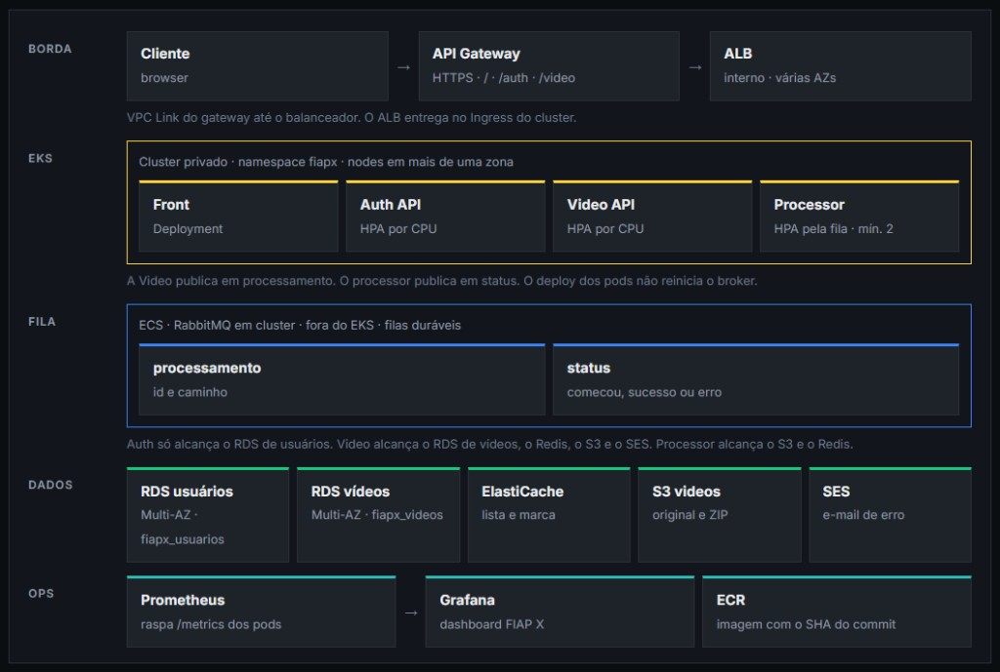

Tech Challenge — Fase 5
Grupo 31 · Software Architecture | Pós Tech — 14SOAT · FIAP · Documento de entrega
| Nome completo | RM | Curso / turma |
|---|---|---|
| Gelson Chrystiano Cavalheiro da Costa | rm369460 | Software Architecture | Pós Tech — 14SOAT |
Instituição: FIAP. Fase: 5 — Tech Challenge / Hackathon.
| Repositório | URL | Função |
|---|---|---|
| Fase5-FiapX | https://github.com/CavalheiroCosta/Fase5-FiapX | Monorepo: Auth API, Video API, Processor, front, Compose, ADRs e guia da apresentação. |
| Campo | Valor |
|---|---|
| Vídeo (YouTube) | https://youtu.be/5EFsx-jkYlM |
| Vídeo no GitHub | apresentacao/video |
| Guia da apresentação | HTML preview do guia |
O vídeo tem no máximo 10 minutos e mostra a documentação, a arquitetura escolhida e o projeto funcionando.
O front fala com a Auth e com a Video API. O binário fica no MinIO. As filas carregam referência e resultado, não o arquivo.
Dois processors consomem a mesma fila processamento. A Video API é a dona do registro no Postgres de vídeos.
O pico de envio fica na fila: a requisição do usuário termina quando a mensagem é publicada.

| Serviço | Descrição |
|---|---|
| Front | Tela em que a pessoa entra, cadastra usuários, envia o vídeo, acompanha o andamento e baixa o ZIP. |
| Auth API | Reconhece quem pode usar o sistema e emite o token. Não processa vídeo. |
| Video API | Recebe o vídeo, acompanha o status, lista os envios daquele login, entrega o ZIP e avisa o dono no erro. |
| Processor | Extrai um frame por segundo, gera o ZIP e devolve o resultado. Não atende o usuário. |
| Postgres | Um banco de usuários e um de vídeos. O binário não fica no banco. |
| MinIO | Mantém o vídeo enviado e o ZIP gerado. |
| RabbitMQ | Filas processamento e status. A mensagem traz a referência, não o arquivo. |
| Redis | Listagem do login e marca que impede o mesmo vídeo em dois processors. |
| Mailpit | Recebe o e-mail de erro. A mensagem não sai da máquina. |
| Prometheus e Grafana | Coleta e o painel FIAP X. |
aguardando_processamento e publica id e caminho.marca:{id} no Redis, extrai os frames e grava o ZIP. Erro não volta para a fila.em_processamento, concluido ou erro. Vídeo fechado não reabre.
As quatro camadas, Api, Application, Domain e Infra, repetem-se na Auth, na Video e no processor. Storage, fila, Redis, e-mail e ffmpeg ficam atrás de interface. As decisões estão em docs/adrs. As que sustentam o desenho: ADR-001 (camadas), ADR-006 (JWT HMAC), ADR-008 (a Video lê o token no processo), ADR-009 (a fila não carrega o binário), ADR-014 (listagem no Redis) e ADR-017 (dois processors).
O fluxo é o mesmo do ambiente local. A borda é API Gateway e um balanceador interno. Os serviços .NET sobem no EKS. A fila RabbitMQ fica no ECS, fora do deploy das APIs. Cada contexto tem o próprio RDS Multi-AZ. O storage é S3, a listagem e a marca ficam no ElastiCache, e o e-mail de erro sai pelo SES.

Na Fase 4, um RDS com banco e role por serviço isolava o dado e custava menos. Pico ou falha atingiam os dois contextos. Aqui a instância é separada porque login e vídeo crescem em ritmos diferentes. O processor escala pela profundidade da fila, com no mínimo dois pods.
| Área | Tecnologia | Motivo |
|---|---|---|
| Serviços | .NET 10 | Auth, Video e processor, cada um nas quatro camadas. |
| Acesso | JWT HMAC, 30 minutos | O enunciado pede usuário e senha. A Video não chama a Auth a cada request. |
| Fila | RabbitMQ | Segura o pico. Vários processors consomem a mesma fila. |
| Banco | PostgreSQL 16 | Um banco por contexto. O schema nasce na subida do serviço. |
| Cache | Redis 7 | Listagem do login e marca de processamento. |
| Storage | MinIO, API S3 | Vídeo e ZIP fora do banco. Na nuvem, o mesmo contrato vira S3. |
| Monitoria | Prometheus e Grafana | O enunciado pede observabilidade do que já existe. |
| CI | GitHub Actions e SonarCloud | Build, testes, quality gate e imagem local. Cobertura de linhas de 80% por serviço. |
| CD | ECR e EKS | No push da main, a imagem publicada atualiza os Deployments. A fila permanece no ECS. |
Não há script SQL separado. O Compose sobe os dois Postgres, o Redis, o RabbitMQ, o MinIO, o Mailpit, o Prometheus, o Grafana, as APIs e o front.
O schema de fiapx_usuarios nasce com a Auth. O de fiapx_videos nasce com a Video API.
O comando está no README: docker compose up -d --build.
| Requisito | Como foi atendido |
|---|---|
| Processar mais de um vídeo ao mesmo tempo | Dois processors na fila processamento. Vídeos diferentes seguem em paralelo. |
| Não perder requisição no pico | O envio termina quando a mensagem está na fila. O binário já está no storage. |
| Usuário e senha | Auth API. JWT de 30 minutos. A conta Adm cadastra os demais. |
| Listagem de status | GET /videos devolve só os vídeos do login, lidos do Redis. |
| Aviso no erro | E-mail depois que o status já está erro. No local, o Mailpit captura a mensagem. |
| Persistência e escala | Postgres por contexto, fila e processors horizontais. A nuvem indicada separa EKS, ECS e RDS. |
| GitHub, testes e CI/CD | Repositório único, testes por serviço e workflow no GitHub Actions. |
Grupo 31 · FIAP Fase 5 · documento de entrega · gerado a partir do guia em apresentacao/ e do enunciado POSTECH — SOAT — Fase 5.